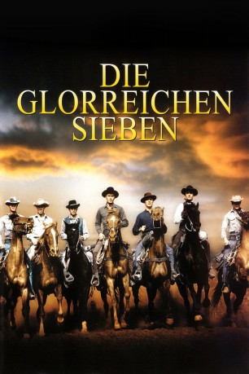

#1420 Die Glorreichen Sieben
Alternativ: The Magnificent Seven
Auszeichnungen: für 1 Oscars nominiert
 
 IMDB-Wertung: 7.8 / 10
IMDB-Wertung: 7.8 / 10  Metascore: 0
Metascore: 0 
Alle Jahre wieder wird eine kleine mexikanische Provinzgemeinde von der durchreisenden Räuberbande des Banditen Calvera zur Kasse gebeten. Darauf beschließen die Dorfoberen, das Geld lieber in eine Hilfstruppe von Revolverhelden zu investieren, um Calvera für immer vom Hals zu haben. Das Unterfangen erweist sich zunächst als Fehlschlag, da die Reserven der Bauern ebenso begrenzt sind wie der Idealismus ihrer Helfer. Als dann aber einige Gringos doch noch ihr Herz für die Landbevölkerung entdecken und die Söldnermentalität über Bord werfen, geht es den Banditen an den Kragen.
Jahr: 1960
Dauer: 128 Minuten
FSK: 12
Land: USA Studio: United ArtistsTonspuren:
Untertitel:
Auflösung: 1080p (1920x824) Größe: 8407 MB
Genre: Action, Abenteuer, Western
Regisseur: John Sturges
Drehbuch: William Roberts, Akira Kurosawa, Walter Bernstein, Shinobu Hashimoto, Walter Newman
Soundtrack: Elmer Bernstein
Darsteller:
Datei: X:\HD-Western-Collections\Glorreichen Sieben\Glorreichen Sieben, Die (1960, FSKUnrated, 1920x824).mkv seit 01.07.2015
Festplatte: HD Eastern+Western
 Es gibt insgesamt 8 Filme in der Gruppe 'HD-Western-Collections\Glorreichen Sieben'
Es gibt insgesamt 8 Filme in der Gruppe 'HD-Western-Collections\Glorreichen Sieben'